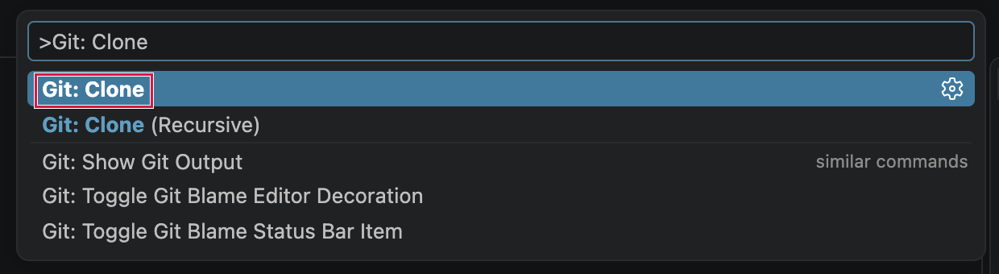
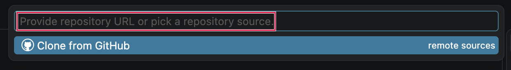
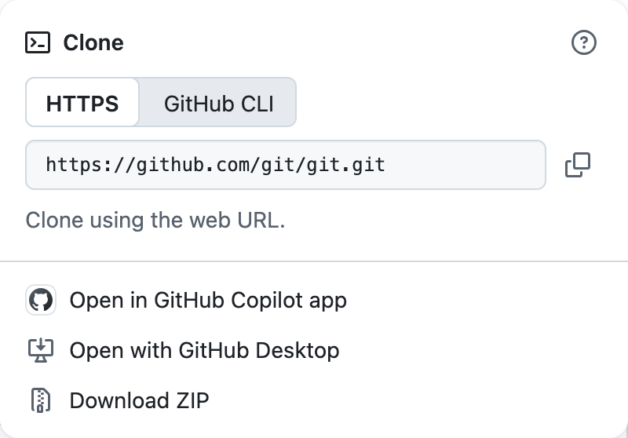
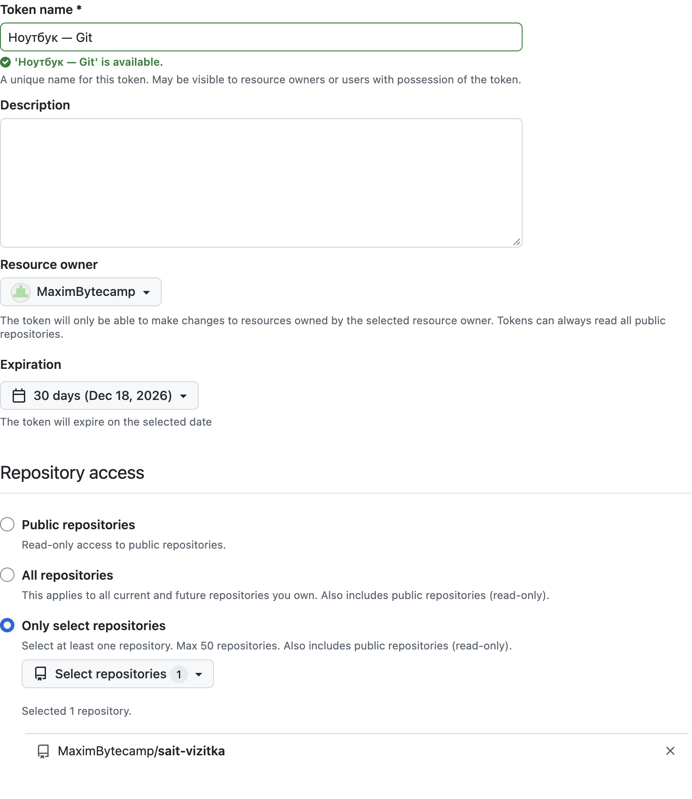
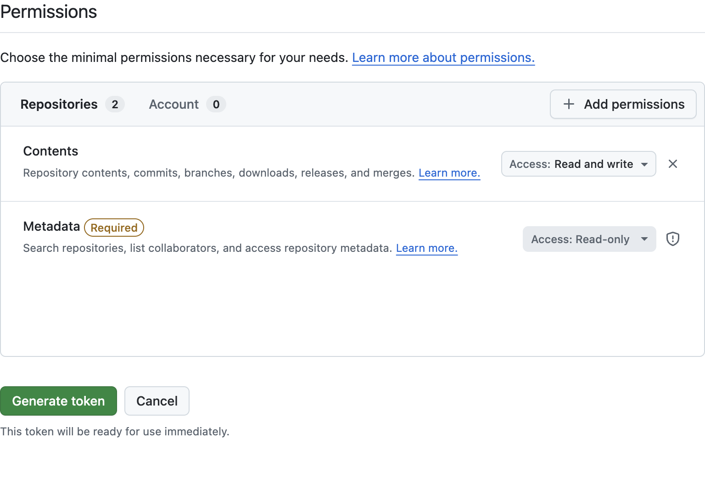
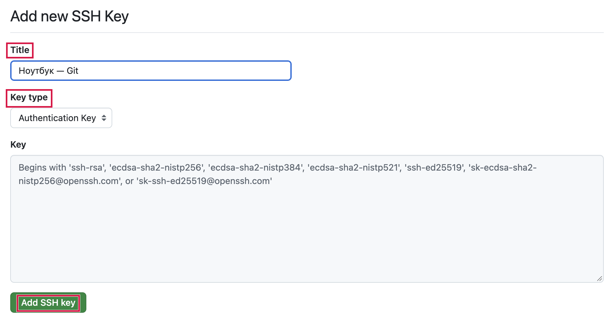

Справочник по Git и GitHub · модуль 4 · GitHub: вход и доступ
Глава 4.2
Как VS Code пускают на GitHub:
вход, токены, SSH-ключи
В этой главе разобраны вход через VS Code, токен для HTTPS и SSH-ключи. Для выбранного способа проверим адрес репозитория и чтение данных.
- Категория
- GitHub
- Уровень
- Начальный
- Что получится
- Проверен выбранный способ доступа к GitHub
- Перед началом
- Аккаунт GitHub, Git и VS Code
Выберите один маршрут. Настройте только выбранный вариант: вход через редактор, ручной PAT или SSH. Кадры форм GitHub сняты без создания токена и добавления ключа.
§1Задача главы
На сайте вы уже вошли в аккаунт. Теперь нужно дать локальному Git доступ к репозиторию: для чтения закрытого проекта и отправки коммитов.
Ассоциация: отдельный пропуск для программы
Вы вошли в здание по своему пропуску. Курьеру нужен отдельный доступ — ваш проход не открывает дверь ему.
Браузер хранит свою сессию. Git подтверждает доступ через приложение, токен или SSH-ключ.
Где не совпадает. Подтвердить личность недостаточно: GitHub отдельно проверяет права на конкретный репозиторий.
Начните со входа через VS Code. Если он уже работает, ручной PAT и SSH для этого подключения не нужны.
§2Способы доступа
У Git два способа соединения с GitHub: HTTPS и SSH. У HTTPS здесь два варианта входа — через приложение или с ручным токеном.
HTTPS-соединение
SSH-соединение
Слева — два варианта для одного протокола HTTPS; справа — SSH. Протокол определяется адресом проекта. Наличие токена или ключа само по себе его не меняет.
Аутентификация, авторизация и место хранения входа
Аутентификация — проверка личности. Авторизация — проверка разрешённого действия: например, читать проект или отправлять коммиты.
| Способ | Что подтверждает вход | Где хранится |
|---|---|---|
| Сайт GitHub | Сессия браузера | Cookie браузера |
| Вход через VS Code | OAuth-токен приложения | В хранилище секретов редактора |
| Ручной PAT | Секретная строка | В менеджере паролей или у credential helper |
| SSH | Цифровая подпись | Приватный ключ — на компьютере; публичный — в GitHub |
OAuth позволяет выдать приложению доступ, подтвердив его в браузере. Сессия браузера не передаётся редактору как его собственный способ входа.
§3Вход через VS Code
Редактор может запросить доступ через браузер. Пароль аккаунта в терминал Git вводить не нужно.
1. Запустить клонирование
Откройте палитру команд: Ctrl+Shift+P в Windows и Linux, ⌘⇧P в macOS. Найдите Git: Clone.


Выделенная строка — нужная команда. Нажмите Enter: вместо списка команд появится поле адреса.


Вставьте HTTPS-адрес своего закрытого репозитория. Открытый проект может клонироваться анонимно — такой результат не проверяет вход.
Где взять адрес: Code → HTTPS
На странице нужного репозитория откройте Code → HTTPS и скопируйте URL. Настоящий кадр ниже снят на публичном репозитории git/git: он показывает меню, но не проверку доступа к закрытому проекту.


Для своего проекта копируйте адрес с его страницы. На этом кадре GitHub открыт без входа: меню содержит HTTPS и GitHub CLI.
2. Подтвердить вход, если редактор его запросит
Разрешите переход в браузер. На странице https://github.com проверьте аккаунт и права приложения; затем подтвердите возврат в VS Code.
Запрашивает доступ к GitHub
Вы проверяете аккаунт и разрешаете доступ приложению
Получает токен приложения и продолжает работу
Браузер нужен для вашего подтверждения; дальнейшие запросы редактор выполняет со своим токеном. Если доступ уже сохранён, нового окна входа может не быть.
Выберите папку для клонирования по запросу VS Code и откройте полученный проект. Порядок выбора папки и запроса входа может различаться между версиями.
Почему вход не меняет автора коммитов
Вход даёт доступ к GitHub, но не меняет имя и почту в коммитах. В терминале проекта проверьте:
git config user.name git config user.email
Без --global команды показывают действующие значения для проекта. Это сведения об авторе, не пароль. Вход в синхронизацию настроек VS Code также не доказывает доступ к репозиторию.
Как проверить результат. Свой закрытый проект открылся после клонирования. В этой главе сняты только начальные окна VS Code; браузерная авторизация и завершённое клонирование не зафиксированы. Если доступ работает, переходите к §6.
§4Токен для HTTPS
Пропуск можно выдать на один этаж и до определённой даты. Похожие ограничения есть у токена.
Personal access token (PAT) — секретная строка для доступа к GitHub. Этот вариант нужен для HTTPS-клиента с ручным вводом токена.
1. Ограничить срок и репозитории
Откройте аватар → Settings → Developer settings → Personal access tokens → Fine-grained tokens → Generate new token. Для собственного проекта выбираем fine-grained токен: у него можно ограничить репозитории и разрешения.
Задайте Token name, ограниченный срок в Expiration и свой аккаунт в Resource owner. В Repository access выберите Only select repositories → Select repositories и отметьте нужный проект.


На кадре выбран только sait-vizitka. Имя помогает узнать назначение токена; доступ ограничивают репозиторий, разрешения и срок.
2. Выбрать разрешения
В разделе Permissions нажмите Add permissions и добавьте Contents. Для чтения достаточно Read-only; для отправки коммитов выберите Read and write.


Required отмечает обязательное разрешение Metadata — чтение служебных сведений о репозитории. Для этих кадров Generate token не нажимали: секрет не создавался.
Необязательные поля и дополнительные права
Description — пояснение назначения, его можно оставить пустым. Для изменения файлов в .github/workflows может понадобиться Workflows: Read and write. Не добавляйте это право, если задача не требует менять workflows.
Выбор одного репозитория ограничивает доступ к закрытым ресурсам и запись. Публичные репозитории по-прежнему доступны для чтения. Токен не даёт владельцу прав, которых у аккаунта нет.
3. Использовать токен как секрет
Если вы выполняете настройку самостоятельно, Generate token выдаст строку целиком только один раз. Сохраните её в менеджер паролей: после ухода со страницы прочитать ту же строку через GitHub нельзя.
При запросе входа Git передаёт токен серверу внутри защищённого соединения. На схеме показано, где проверяются его ограничения:
Git запрашивает Username и Password
Проверяет токен, срок, репозиторий и разрешения
В Username вводят свой логин GitHub; в Password — PAT. Название поля не означает, что нужен пароль аккаунта: GitHub не принимает его для Git по HTTPS.
Токен не включают в URL, команды и отчёт. Вставляйте его только в запрос секрета или защищённый менеджер учётных данных. Не снимайте страницу с выданной строкой.
Если символы не видны или вместо Password открывается браузер
Терминал может скрывать ввод секрета целиком. Если открывается браузер, работает настроенный способ входа через приложение. Менять его на ручной PAT не требуется.
Где Git сохраняет токен
Credential helper передаёт Git сохранённые данные входа. Git Credential Manager использует защищённые системные хранилища. Помощник store пишет секреты открытым текстом — для PAT его здесь не настраиваем.
git config --show-origin --get-all credential.helper
--get-all выводит все значения, --show-origin — файлы настроек, откуда они взяты. Пустой вывод означает отсутствие этого параметра в прочитанной конфигурации; редактор может использовать и другие механизмы входа.
Что показано. Параметры ограниченного PAT и способ его передачи Git. Создание и применение реального токена не проверялись. Для проверки чтения — §6.
§5Подключение по SSH
Подпись можно проверить по образцу, оставив инструмент для её создания у владельца. Так разделены роли пары криптографических ключей.
SSH — протокол защищённого подключения. Компьютер подтверждает владение приватным ключом: создаёт цифровую подпись. Схема разделяет хранение файлов и обмен при входе:
Остаётся на компьютере.
Создаёт подпись.
Добавляется в GitHub.
Проверяет подпись.
Подписывает данные подключения приватным ключом
Проверяет подпись по публичному ключу аккаунта
При настройке в GitHub копируют содержимое .pub. При дальнейших подключениях передаётся подпись. Приватный файл остаётся на компьютере. Права на репозиторий GitHub проверяет отдельно.
1. Проверить, нет ли уже пары
В терминале VS Code выведите список имён файлов. Выберите команду для своей оболочки:
Get-ChildItem "$HOME/.ssh"
ls ~/.ssh
Если папки нет, команда сообщит об этом. Если уже есть id_ed25519 и id_ed25519.pub, сначала выясните их назначение. Существующую пару не перезаписывайте.
2. Создать пару, только если её нет
-t ed25519 выбирает алгоритм, -C добавляет комментарий. Комментарий входит в публичную строку, поэтому используйте метку устройства без личных данных.
ssh-keygen -t ed25519 -C "laptop-git"
На вопрос о пути Enter выбирает стандартное имя. При запросе перезаписи отмените команду через Ctrl+C. Задайте passphrase — парольную фразу для защиты приватного файла.
После создания выведите и скопируйте только публичный файл:
Get-Content "$HOME/.ssh/id_ed25519.pub"
cat ~/.ssh/id_ed25519.pub
Нужна вся строка, начинающаяся с ssh-ed25519. Проверьте окончание .pub в пути. Содержимое файла без него не выводите.
3. Добавить публичную часть в GitHub
Откройте аватар → Settings → SSH and GPG keys → New SSH key. В Title укажите компьютер, в Key type оставьте Authentication Key.


В Key вставляют публичную строку из .pub; Add SSH key сохраняет её в аккаунте. Для кадра поле оставили пустым и кнопку не нажимали.
4. Проверить сервер и аккаунт
Для настроенной пары выполните команду ниже. git — служебное имя GitHub для SSH, его не заменяют своим логином. -T отключает выделение псевдотерминала.
ssh -T git@github.com
При подключении проверяются обе стороны: сначала сервер, затем ваш аккаунт. Для этого используются разные ключи:
Вы сверяете отпечаток ключа сервера с GitHub Docs
GitHub проверяет подпись ключом вашего аккаунта
При первом подключении может появиться запрос доверия серверу. До ответа yes сравните алгоритм и fingerprint — отпечаток ключа — с официальным списком GitHub. При несовпадении прекратите подключение.
Как выглядит успешный ответ SSH — пример из документации
Hi USERNAME! You've successfully authenticated, but GitHub does not provide shell access.
Ответ подтверждает аутентификацию указанного аккаунта, но не доступ к конкретному проекту. GitHub не предоставляет командную оболочку; поэтому успешная проверка завершается с кодом 1.
По-простому: почему приватный ключ не нужно отправлять
Подпись на бумаге проверяют по образцу. Сходство с SSH — в разделении ролей: один инструмент создаёт подпись, другой позволяет её проверить.
Что есть что. Инструмент — приватный ключ; образец — публичный. Подпись связана с данными подключения математически: аналогия объясняет роли, но не устройство криптографии.
Как проверить результат. В ответе SSH указан ваш логин. При подготовке этой версии ключи не создавались и не добавлялись, команда SSH не запускалась. Проверка адреса проекта — следующий шаг.
§6Проверить адрес и доступ
Для разных входов в здание нужны подходящие пропуска. У Git способ доступа тоже должен совпадать с адресом подключения.
Добавленный SSH-ключ не переключает проект на SSH. Протокол записан в адресе remote — именованного подключения к удалённому репозиторию.
git remote -v
Сопоставьте начало выведенного адреса с одним из двух шаблонов:
https://github.com/OWNER/REPO.git
Вход через приложение или PAT.
Публичное чтение — и без входа.
git@github.com:OWNER/REPO.git
Аутентификация SSH-ключом.
Права на проект проверяются отдельно.
Сравните свой адрес со схемой. Строка (fetch) — адрес получения, (push) — отправки; они могут отличаться. Если вывода нет, remote ещё не задан. Команда показывает настройку, но не проверяет соединение.
Выбран SSH, а origin всё ещё использует HTTPS
Сначала сохраните текущий адрес из git remote -v. На странице своего проекта скопируйте Code → SSH. Если remote называется origin, замените его адрес:
git remote set-url origin git@github.com:OWNER/REPO.git git remote -v
set-url меняет локальную настройку, но не рабочие файлы и не историю. Повторный вывод должен показать SSH-адрес. Для HTTPS этот шаг не нужен.
Чтобы проверить чтение проекта, выполните:
git fetch origin git status
fetch получает историю и обновляет ссылки на удалённые ветки. Рабочие файлы и текущая локальная ветка сохраняются. Команда status показывает состояние проекта. Если новых коммитов нет, успешный fetch может ничего не вывести.
Что подтверждает проверка. Успешный fetch — чтение этого проекта, но не право на push. Для публичного HTTPS-репозитория вход мог вообще не потребоваться. Проверку своего аккаунта проводите на закрытом проекте.
§7Если вход не работает
| Сообщение или симптом | Возможная причина | Что проверить |
|---|---|---|
Authentication failed | Неверный, отозванный или просроченный токен; сохранённые старые данные | Срок и права PAT. Удалить запись GitHub через используемый менеджер учётных данных и повторить вход |
Permission denied (publickey) | Сервер не принял предложенный SSH-ключ | Публичная часть добавлена в нужный аккаунт. Файл находится по стандартному пути или выбран в SSH-настройках |
Repository not found | Ошибка в адресе или отсутствие доступа | git remote -v, владелец, имя, права аккаунта |
| VS Code вошёл в другой аккаунт | При подтверждении использована другая сессия браузера | Аккаунт редактора и логин на GitHub при повторном входе |
Нужен ли ssh-agent
Помощник ssh-agent может хранить разблокированный ключ в памяти, чтобы не вводить парольную фразу повторно. Его отсутствие само по себе не доказывает причину ошибки: SSH может читать стандартный файл напрямую.
Токен, который попал в публичное место, немедленно отзовите через Settings → Developer settings → Personal access tokens. Затем проверьте действия аккаунта и создайте новый токен с нужными правами. Удаление строки из текущего файла не отзывает опубликованный секрет.
Для проверки преподавателю достаточно сообщения об ошибке и адреса без секретов. Пароль, PAT и приватный ключ в отчёт не включают. После исправления повторите проверку выбранного маршрута.
§8Проверка себя
GitHub открыт в браузере. Почему Git снова запрашивает вход?
Браузер хранит собственную сессию. Git требуется отдельное подтверждение для HTTPS или SSH. Способ подключения определяют по адресу remote.
Нужно ли создавать PAT после успешного входа через VS Code?
Для уже работающего HTTPS-маршрута через редактор ручной PAT не требуется. Он нужен, если выбран клиент с ручной передачей токена.
Какой файл можно добавить на GitHub: id_ed25519 или id_ed25519.pub?
Файл id_ed25519.pub содержит публичный ключ. Приватный id_ed25519 остаётся на компьютере и не передаётся преподавателю.
SSH-проверка успешна, но origin начинается с https://. Используется ли SSH?
Нет. Для этого адреса Git использует HTTPS. Чтобы применять SSH-ключ, нужен SSH-адрес репозитория.
Успешный fetch подтверждает право на push?
Нет. Чтение и запись проверяются отдельно. Публичный репозиторий по HTTPS может читаться без аутентификации.
Самостоятельная проверка
- Выберите один маршрут: VS Code + HTTPS, PAT + HTTPS или SSH. Выполните относящиеся к нему действия.
- В существующем локальном репозитории проверьте
git remote -v. Определите протокол по адресу. - Выполните
git fetch origin. Запишите, что эта команда проверяет и чего она не подтверждает. - Для SSH дополнительно выполните
ssh -T git@github.comи проверьте логин в ответе.
В результате должны совпасть выбранный маршрут и адрес remote. Сохранить команды для повторной проверки можно в шпаргалке.
§9Шпаргалка
Git: CloneВход по запросу редактораUsername → логинPassword → токенid_ed25519 — секретid_ed25519.pub — в GitHubgit remote -vgit fetch originssh -T git@github.comЛогин должен быть вашим§10Глоссарий
Термины главы
| Термин | Значение в этой главе |
|---|---|
| Аутентификация | Подтверждение личности программы или человека |
| Авторизация | Проверка права на конкретное действие |
| OAuth | Выдача приложению доступа через подтверждение пользователя |
| PAT | Секретный personal access token для доступа к GitHub |
| SSH-ключи | Связанная пара: приватный создаёт подпись, публичный проверяет её |
| Passphrase | Парольная фраза для защиты приватного ключа |
| Fingerprint | Отпечаток ключа, используемый для его сравнения |
| Remote | Сохранённое имя удалённого репозитория с адресами подключения |
Итог главы
- Вход через VS Code, ручной PAT и SSH — альтернативные маршруты.
- Токен ограничивают сроком, репозиториями и разрешениями.
- В GitHub добавляют публичный SSH-ключ. Приватный файл остаётся на компьютере.
- Адрес remote определяет протокол подключения.
fetchпроверяет чтение. Право записи требует отдельной проверки.
Источники и границы проверки
- GitHub Docs: About authentication to GitHub.
- GitHub Docs: Managing your personal access tokens.
- GitHub Docs: Generating a new SSH key.
- GitHub Docs: Testing your SSH connection.
- GitHub Docs: SSH key fingerprints.
- Visual Studio Code: Working with GitHub.
- Git: Credential helpers.
- GitHub Docs: Removing sensitive data.
Текст ответа SSH и код завершения приведены по документации GitHub. Формы PAT и SSH сняты в действующем интерфейсе GitHub: токен не генерировался, ключ не добавлялся. Кадры VS Code показывают выбор Git: Clone и поле адреса. Меню Code снято на публичном git/git без входа в аккаунт. Полный цикл входа, создание ключей и команды SSH на Windows, macOS и Linux при подготовке этой версии не прогонялись. Команды в главе предназначены для самостоятельного выполнения. Их успешный запуск на компьютере автора здесь не заявлен.